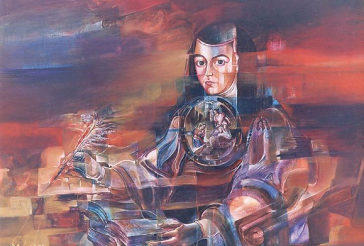

1 - Synopsis
Sor Juana Ines de la Cruz was a 17th century nun, self-taught scholar and acclaimed writer of the Latin American colonial
period and the Hispanic Baroque. She was also a staunch advocate for women's rights.
"One can perfectly well philosophize while cooking supper."
Sor Juana Ines de la Cruz

2 - Review: The Monstrosity of Sor Juana
With a pair of twinned chapbooks - Enigmas by Sor Juana Ines de la Cruz, translated by Stalina Emmanuelle Villarreal, and
Sor Juana and Other Monsters by Luis Felipe Fabre, translated by John Pluecker-the series has performed a singular
conjuration. In this quadruple array, Mexico's great Baroque poet Sor Juana rises as a powerful and paradoxical specter
from the inky ash of her own final, long-lost texts.
Continue

3 - Review: A Woman Named Juana and Two Named Maria Luisa
When director Maria Luisa Bemberg, Argentinian film maker, encountered Sor Juana Ines de la Cruz, probably when she read
The Traps of Faith by Octavio Paz, she found a kindred spirit. It is not surprising that Bemberg would make a film
about Sor Juana because they had much in common despite the almost three centuries between them.
Continue
4 - Synopsis
Born circa November 12, 1651, in San Miguel Nepantla, Tepetlixpa, Mexico, Juana Ines de la Cruz's intelligence and
scholarship became known throughout the country during her teen years. She began her life as a nun in 1667 so that
she could study at will. After taking her vows, Sor Juana read tirelessly and wrote plays and poetry, often challenging
societal values and becoming an early proponent of women's rights. Sor Juana is heralded for her Respuesta a Sor Filotea,
which defends women's rights to educational access, and is credited as the first published feminist of the New World.
She died in Mexico in 1695.
5 - Review: The Monstrosity of Sor Juana
With a pair of twinned chapbooks - Enigmas by Sor Juana Ines de la Cruz, translated by Stalina Emmanuelle Villarreal, and
Sor Juana and Other Monsters by Luis Felipe Fabre, translated by John Pluecker-the series has performed a singular
conjuration. In this quadruple array, Mexico's great Baroque poet Sor Juana rises as a powerful and paradoxical specter
from the inky ash of her own final, long-lost texts.
Continue
6 - Review: A Woman Named Juana and Two Named Maria Luisa
When director Maria Luisa Bemberg, Argentinian film maker, encountered Sor Juana Ines de la Cruz, probably when she read
The Traps of Faith by Octavio Paz, she found a kindred spirit. It is not surprising that Bemberg would make a film
about Sor Juana because they had much in common despite the almost three centuries between them.
Continue